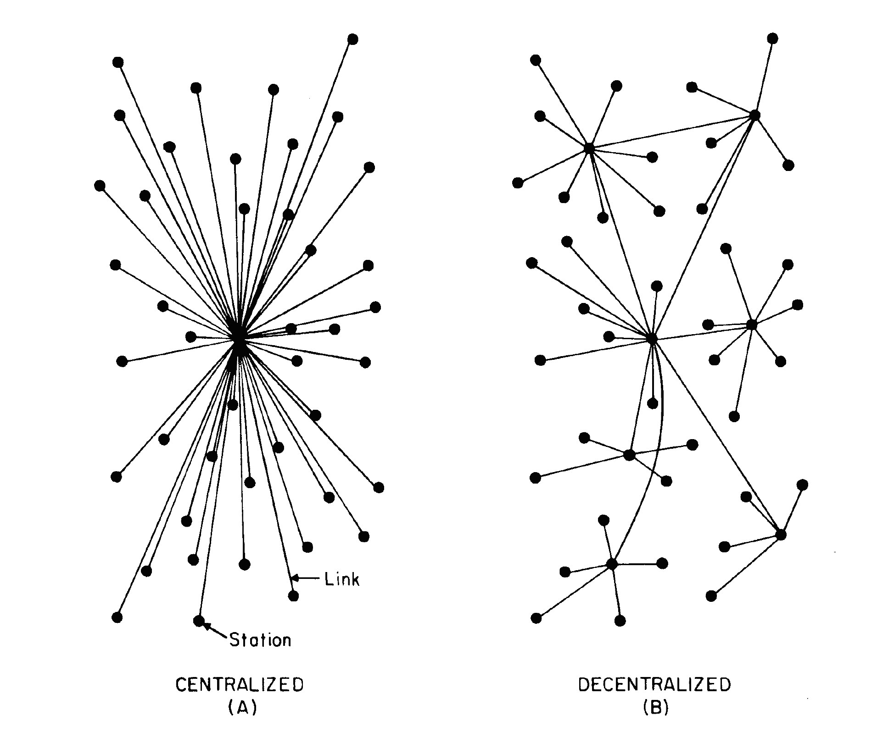

Intro to Blockchain
WebDev's Edition
Slides compiled by Ryan Moore
Who am I?
I'm Ryan
👋
- "Full" "Stack" "Developer"
- 3 years of Professional Software making
- LaunchCode Alumn
- Programmer Analyst at Washington University
- FrontEnd Dev with Chris Schmitz at Paradowski Creative
- Backend Dev at Tagg Logistics
This Talk:
- As a Data Structure
- Networks and Algorithms
- Applications and such
Disclaimer
blockchain (noun)
- Naively: A Data Store
- Little less naively: An Immutable, Decentralized Ledger
- Independently and actively verified by peers on a network
Git applies a cryptographic hash function to objects in a repository
- For consistency, not security
- f(📄) = 🤷
- f(📄 + 1) = 🤷
echo 'Hello' | git hash-object --stdin- Bonus:
echo 'Hello' | openssl sha1
(Merkle) Trees and Blobs
One Dimensional View

Two Dimensional View
To Recap:
- Git calculates unique* hashes for objects in a repository
- (1D View) Changes in the data cause changes in the root hash
- (2D view) Changes in the history cause changes in the root hash
- Large computational benefits (set membership)
Git Trees + a Bunch of moving parts = BlockChain!?
- Yay!! We did it! 🎉
- well..sort of 🤔
- Git actually uses a dd merkle dag, not a tree
- I think theres also a Trie somewhere in there
- There's also the whole decentralized + concensus + trustless parts
Quick Comparison
- Blocks as Commits
- Chains as Branches
- Everyone tracks the
master. Multiple new commits happen, thecommitscompete to be the "true" chain - Which is equivalent to branching
- Forks happen. Usually when theft is involved.
Blocks

- Transaction List
- Merkle Tree + Nonce
Transactions
Adding a line to a the next "commit"
Thinking again of BlockChain as a Data Store
- 👀 Everyone has read-access
- 👝 Wallet/User addresses instead of names
- 🖍 Writes must be signed (require private key)
- 🚫 Invalid writes will get rejected by other nodes
The Network
Blockchains are politically decentralized (no one controls them) and architecturally decentralized (no infrastructural central point of failure) but they are logically centralized (there is one commonly agreed state and the system behaves like a single computer)
-Canadian Guy wearing Unicorn Shirt
Peer to Peer Networks
- Transaction pool
- Mining Nodes
- Full Nodes
- Thin Nodes
Mining (Proof of Work)
- Node connected to Blockchain Network, with updated local copy
- Verify no double spending has taken place
- Access to transaction pool (current unverified transactions)
- Compute
SHA1(SHA1(merkle root + Nonce))to get a leading-0 result - Transmit results to other nodes, see if block gets accepted
- Bad for the Environment
Other Stuff Real Quick
- Second and Third Generation Cryptos
- IPFS
- Distributed Apps
Web3
const web3 = require('web3')
const address = 'ethereum address (infura)'
const myweb3 = new web3(address)
var acct = myweb.eth.accounts.create()
myweb3.eth.getBalance(acct["address"], (err, bal) => { balance = bal})
// get that coin
var rawTransaction =
{
"from": '',
"to": '',
"value": myweb3.utils.toHex(myweb3.utils.toWei("0.001", "ether")),
"gas": 200000
}
acct.signTransaction(rawTransaction)
.then(signedTx => myweb3.eth.sendSignedTransaction(signedTx.rawTransaction))
.then(receipt => console.log("Receipt: ", receipt))
.catch(err => console.log(err)
)
Non 100% Currency-related uses of BlockChain
- Open Access Data
- HealthCare
- FileStorage
- RFID + Logistics
- Messaging
Resources
- Podcast: Unchained
- Podcast: The Bitcoin Podcast Network
- Youtube